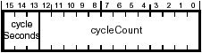

|
|
This Technical Note offers advice and tips on writing DCL programs for isochronous FireWire devices.
This Technical Note is primarily directed at developers who are writing user space code to get data from or send data to isochronous FireWire devices.
You should be familiar with general I/O Kit and device interface concepts presented in "Accessing Hardware From Applications".
Also you will find the examples and documentation in the FireWire SDK for Mac OS X helpful in your efforts. The current FireWire SDK is available here.
A detailed description of the FireWire specification is beyond the scope of this document. For more information, see Apple's FireWire technology page and the 1394 Trade Association website.
[Jun 21, 2003]
|
What is DCL?
The Datastream Control Language (DCL) is a set of commands that control data flow in to or out of a data stream. A DCL program consists of a number of DCL commands collected together into a linked list. A DCL program is associated with and controls a particular data stream, for example an isochronous channel.
Back to top
DCL commands
This section describes the DCL commands available for use in your DCL program. Each command is allocated using the AllocateXXXDCL methods provided by the IOFireWireLibDCLCommandPool interface, where "XXX" is one of the DCL commands, for example AllocateSendPacketStartDCL.
-
SendPacketStart-
Specifies the first part (or all) of a packet buffer to be sent to a data stream. An isochronous packet header will be generated for you.
-
SendPacketWithHeaderStart-
Specifies the first part (or all) of a packet buffer including an isochronous packet header to be sent to a data stream. The first quadlet of this buffer must be the 1394 isochronous packet header you wish sent with this packet.
-
SendPacket-
Specifies additional bytes to be appended to the previous
Send command.
-
ReceivePacketStart-
Specifies a buffer that will receive the first part (or all) of a packet from a data stream.
-
ReceivePacket-
Specifies a buffer that will receive the next packet from a data stream.
-
CallProc-
When this command is executed a user provided callback function is invoked. Note that the DCL program does not wait for the callback to return, it continues to execute independently of the CPU. See Structure and Execution of a DCL Program.
-
Label-
Specifies a location in the DCL program that can be used as the target of a
Jump command.
-
Jump-
Used to change the flow of the DCL program execution by jumping to a
Label (see above).
-
SetTagSyncBits-
Specifies the tag and sync bits in the isochronous packet header for packets that are sent to a data stream.
-
TimeStamp-
This command takes a pointer to a timestamp variable (a pointer to a 32 bit value). The variable will be filled in when the
TimeStamp command is updated by an UpdateDCLList command (see above).
The timestamp is a 16-bit value as defined in the 1394 Open Host Controller Interface Specification v1.1, section 7.1.5.3:

Figure 1. Timestamp
When copied to your timestamp variable the 16 bit value shown in Figure 1., above, is placed in the high order 16 bits. The low order 16 bits of your timestamp variable are set to zero.
-
UpdateDCLList-
This command is used to update a list of
Send, Receive, or TimeStamp commands. For example it prepares receive or send buffers by byte-swapping packet headers and copies time stamp information into the timestamp pointed to by a TimeStamp command.
Updating is performed by the CPU: keep in mind that while the updating is performed, the DCL program continues to run independently of the CPU.
Note that the very first time a transmit DCL command runs, you don't need an update step. This is because the FireWire software does the update before it starts the DCL program. However you must update a transmit DCL command before it is run again.
Receive DCLs must always be updated before you look at the buffers. The update handles any byte-swapping or endian issues.
Timestamp DCLs must always be updated before you read the timestamp. The update process generates the timestamp.
-
- Unimplemented commands
-
Certain DCL commands are not currently implemented, even though they do have a method to allocate them in the
IOFireWireLibDCLCommandPool interface. Therefore, do not use the following methods when writing your DCL programs:
AllocateTransferBufferDCL
AllocateReceiveBufferDCL
AllocateSendBufferDCL
Back to top
Structure and execution of a DCL program
A DCL program is essentially a linked list of DCL commands. The program is compiled and run on the FireWire hardware independently of the CPU. In other words the DCL program runs in hardware in real time. This has certain implications that will be explored further in the section DCL program strategies.
DCL programs are executed in linked list order starting with the first DCL command in the list. The order of execution can be modified by use of Jump commands that can redirect program execution to a specific Label. You can create quite complex programs using Jump and Label commands and you can even modify the destination of a Jump command while the program is running. Using Jump and Label commands is explored more in the section DCL program strategies.
Each DCL command has a field pNextDCLCommand that points to the next DCL command in the program. To indicate the end of the DCL program, set the pNextDCLCommand in the last DCL command of the program to zero. Even if the last DCL command is a Jump back to the top of the program, the pNextDCLCommand field must be set to zero to mark the end of the program. If the pNextDCLCommand field is not zero it's likely you will hang the DCL compiler.
|
Note:
Typically a DCL program will contain a number of ReceivePacketStart or SendPacketStart commands. Though available, the ReceivePacket and SendPacket commands are generally not used.
|
There are three basic rules to follow when writing DCL programs:
-
A
Label command must be followed immediately by a SendPacketStart or ReceivePacketStart command.
-
An
UpdateDCLList or CallProc command must directly follow a SendPacketStart or ReceivePacketStart command, or an UpdateDCLList or CallProc command that directly follows a SendPacketStart or ReceivePacketStart command.
- For best results make sure that your packet buffers don't cross page boundaries (more about this later).
A simple example:
The simplest DCL program for receiving packets consists of a Label, some number of ReceivePacketStart commands, an UpdateDCLList, and a CallProc. For example:
Label
ReceivePacketStart
ReceivePacketStart
ReceivePacketStart
ReceivePacketStart
ReceivePacketStart
UpdateDCLList
CallProc
|
Address DCL command pNexDCLCommand points to:
0001 Label 0002
0002 ReceivePacketStart 0003
0003 ReceivePacketStart 0004
0004 ReceivePacketStart 0005
0005 ReceivePacketStart 0006
0006 ReceivePacketStart 0007
0007 UpdateDCLList 0008
0008 CallProc NULL (end of DCL program)
|
This DCL program would receive 5 packets, update the received data to handle any endian issues, then call the user supplied callback function to alert your code that the 5 packets had been received and were ready to be read.
A looping example:
A slightly more complicated example involves setting up continuous reception of data from the data stream by using a Jump command to create a loop:
Label1
ReceivePacketStart
(198 ReceivePacketStart commands)
ReceivePacketStart
UpdateDCLList
CallProc
Jump Label1
|
This DCL program would receive a total of 200 packets (total of 200 ReceivePacketStart commands), update the received data, call the user supplied callback function, then loop back to Label1 and begin receiving data again.
|
IMPORTANT:
The DCL program above is only an example showing looping and is not a practical implementation for receiving data. See the section DCL program strategies for details.
|
Back to top
Allocating buffers
When allocating a buffer for your packets use vm_allocate to create the buffer and vm_deallocate to release the buffer when you are finished with it. In addition, you will get best performance if your DCL data buffers do not cross page boundaries.
A good strategy is to calculate how many of your packets will fit into a virtual memory page, allocate the memory as a single block, and carve it up into your packet buffers. You don't have to worry about page-aligning the memory since vm_allocate always returns page-aligned memory.
How big is a virtual memory page? You can use getpagesize (defined in unistd.h) to calculate your allocation size and to align your buffer(s) to ensure that they aren't crossing page boundaries.
Example:
Suppose you need 500 buffers, each of which will be 800 bytes, because
you are receiving packets that are up to 800 bytes long (including the isochronous header).
If you just allocated an array of 500 x 800, many of the buffers would cross page boundaries. Currently a virtual memory page = 4096 (4kB), so you can calculate how many 800-byte buffers fit neatly into a 4kB page:
4096 / 8 = 5 buffers/page (with 96 bytes left over on each page)
500 buffers / 5 buffers/page = 100 pages
|
Since vm_allocate is guaranteed to give you page-aligned memory, you don't have to worry about page-aligning the returned memory:
|
Listing 1. Allocating page-aligned buffers.
|
kern_return_t result;
vm_address_t p, savePtr;
vm_size_t allocSize;
allocSize = 100 * getpagesize(); // size of memory allocation
// allocate memory at any address
result = vm_allocate( current_task(),
&p,
allocSize,
FALSE );
if( KERN_SUCCESS == result )
{
savePtr = p; // save the ptr for later vm_deallocate
// now p points to 100 pages beginning at a page-aligned address.
...
}
...
// when all done
result = vm_deallocate( current_task(), savePtr, allocSize );
|
Back to top
What data is received?
The data in the receive buffers consists of the 4 byte isochronous packet header followed by the data payload from the received packet. The CRC quadlets for the isochronous header and the payload are not placed in the receive buffer.
This implies that each packet receive buffer needs to be payloadSize + 4 bytes in length.
Back to top
What data is transmitted?
If you are using a SendPacketStart command an isochronous packet header is generated for you and the data in the transmit buffer becomes the payload for that packet.
If you are using a SendPacketWithHeaderStart you must generate your own isochronous packet header. The packet header will be the first quadlet in the transmit buffer followed immediately by the payload data.
In either case the CRC quadlets for the isochronous packet header and payload are generated for you.
Back to top
DCL program strategies
Generally, for continuous streams of data, you want your DCL program to have several segments. This is because the FireWire hardware continues running the DCL program while your CallProc is executing. Therefore you must provide enough buffers to continue receiving the incoming packets while your CallProc is executing.
The FireWire hardware DMAs incoming packets directly into your buffers. If your DCL program has a loop or loops in it, you run the risk of having the DMA wrap around and overwrite the already received data. This can happen if your CallProc is delayed, or if you spend too much time in your CallProc.
A better DCL program that provides a mechanism to detect if there has been an overrun is shown here:
Label 1
ReceivePacketStartOp x 200
Timestamp (optional)
Update (200 packets + timestamp)
CallProc A
Jump A -> Label 2
Label 2
ReceivePacketStartOp x 200
Timestamp (optional)
Update (200 packets + timestamp)
CallProc B
Jump B -> Label 3
Label 3
ReceivePacketStartOp x 200
Timestamp (optional)
Update (200 packets + timestamp)
CallProc C
Jump C -> Label 4
Label 4
ReceivePacketStartOp (just one, to satisfy the rules above)
CallProc D
(end = link to next DCL == NULL)
|
Here's how it works:
- When
CallProc A is run it does whatever processing of the data is necessary and then it modifies two of the Jump commands. It modifies Jump A to point to Label 4 and it modifies Jump C to point to Label 1:
Label 1
ReceivePacketStartOp x 200
Timestamp (optional)
Update (200 packets + timestamp)
CallProc A
-> Jump A -> Label 4
Label 2
ReceivePacketStartOp x 200
Timestamp (optional)
Update (200 packets + timestamp)
CallProc B
Jump B -> Label 3
Label 3
ReceivePacketStartOp x 200
Timestamp (optional)
Update (200 packets + timestamp)
CallProc C
-> Jump C -> Label 1
Label 4
ReceivePacketStartOp (just one, to satisfy the rules above)
CallProc D
(end = link to next DCL == NULL)
|
This may seem like you are changing Jump A just before it executes, but you really are not. Remember: the DCL program continues to run and is well past Jump A before your CallProc is invoked.
- When
CallProc B is run it does whatever processing of the data is necessary and then it modifies two of the Jump commands. It modifies Jump A to point to Label 2 and it modifies Jump B to point to Label 4:
Label 1
ReceivePacketStartOp x 200
Timestamp (optional)
Update (200 packets + timestamp)
CallProc A
-> Jump A -> Label 2
Label 2
ReceivePacketStartOp x 200
Timestamp (optional)
Update (200 packets + timestamp)
CallProc B
-> Jump B -> Label 4
Label 3
ReceivePacketStartOp x 200
Timestamp (optional)
Update (200 packets + timestamp)
CallProc C
Jump C -> Label 1
Label 4
ReceivePacketStartOp (just one, to satisfy the rules above)
CallProc D
(end = link to next DCL == NULL)
|
- When
CallProc C is run it does whatever processing of the data is necessary and then it modifies two of the Jump commands. It modifies Jump B to point to Label 3 and it modifies Jump C to point to Label 4:
Label 1
ReceivePacketStartOp x 200
Timestamp (optional)
Update (200 packets + timestamp)
CallProc A
Jump A -> Label 2
Label 2
ReceivePacketStartOp x 200
Timestamp (optional)
Update (200 packets + timestamp)
CallProc B
-> Jump B -> Label 3
Label 3
ReceivePacketStartOp x 200
Timestamp (optional)
Update (200 packets + timestamp)
CallProc C
-> Jump C -> Label 4
Label 4
ReceivePacketStartOp (just one, to satisfy the rules above)
CallProc D
(end = link to next DCL == NULL)
|
This technique effectively "extends" the DCL program each time a CallProc is run. Another way to think about it is each time a CallProc is run you are moving the end of the program farther away from where it is currently executing.
If CallProc D is ever called then you know that the DCL program ran out of receive buffers because software was slow. This guarantees you will detect if a wraparound ever occurs and can take appropriate action.
The above example is equally applicable to DCL programs that send packets.
Back to top
Receiving variable size packets
Some isochronous streams will have variable size packets. To receive these packets, create your receive buffers so they are large enough to receive the largest packet you expect. Each buffer will receive one packet. The isochronous header is included as the first quadlet of each incoming packet. You can look at the header to see the actual payload size of each received packet. Make sure that your DCL program executes an UpdateDCLList command before you examine the header.
Back to top
Transmitting variable size packets
Currently Mac OS X does not support changing the data size of a transmit DCL on the fly. If you need to transmit variable size packets it is still possible to do so provided that you know ahead of time the order and sizes of all packets you are transmitting. Construct your DCL program with a number of segments, each segment responsible for a different packet size. By careful manipulation of the targets of your Jump DCLs during your CallProcs you can create a stream of variable sized packets.
Back to top
A word about threads
Timely scheduling of your DCL CallProcs is essential to efficient data transmission and reception. A good technique to ensure this is to have your DCL CallProcs run on a separate real-time thread:
-
Create a thread that you will use for reception or transmission. Note that each thread has its own CFRunLoop.
-
Use the
AddCallbackDispatcherToRunLoop and AddIsochCallbackDispatcherToRunLoop methods to add the callback dispatchers to the thread's CFRunLoop.
-
Use the Mach Thread API
thread_policy_set to change your thread's priority to be a real-time thread. Using thread_policy_set is described in the book Inside Mac OS X: Kernel Progamming, chapter "Mach Scheduling and Thread Interfaces", section "Using the Mach Thread API to Influence Scheduling".
-
Run the thread's runloop by calling
CFRunLoopRun.
Back to top
Summary
DCL programs can be tricky. Program structure, allocation of buffers, and proper handling of CallProcs are vital to creating an efficient and robust DCL program. By using the techniques described in this Technical note you can avoid many headaches and ensure that your DCL program does what you expect.
Back to top
Related Materials
Back to top
|